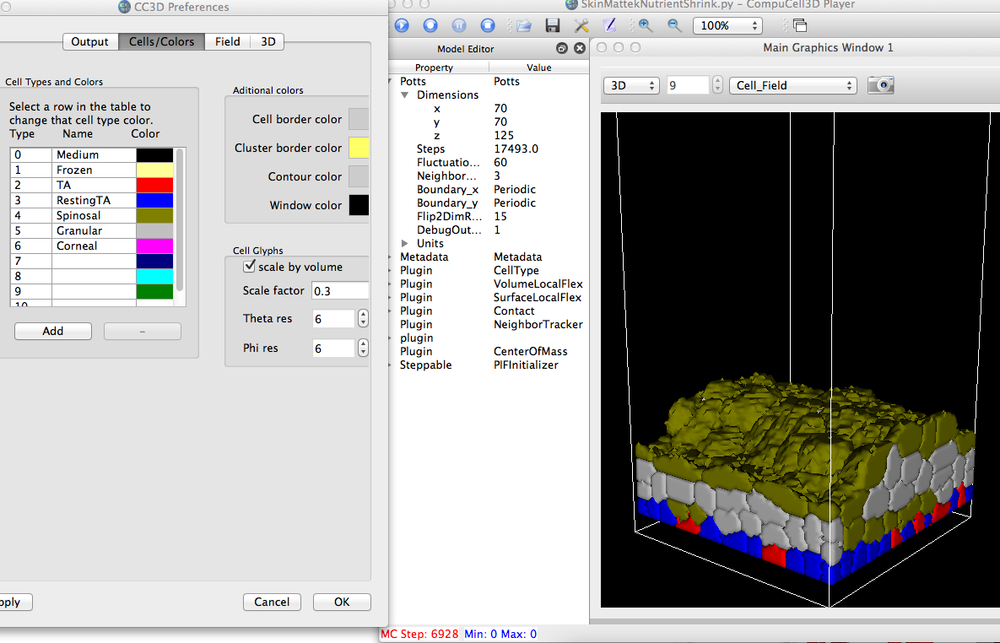
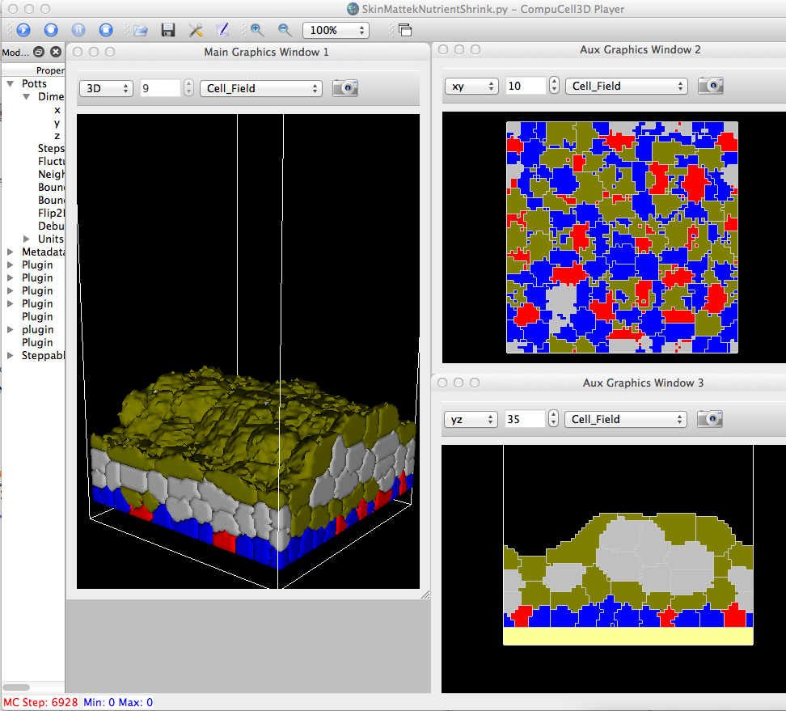
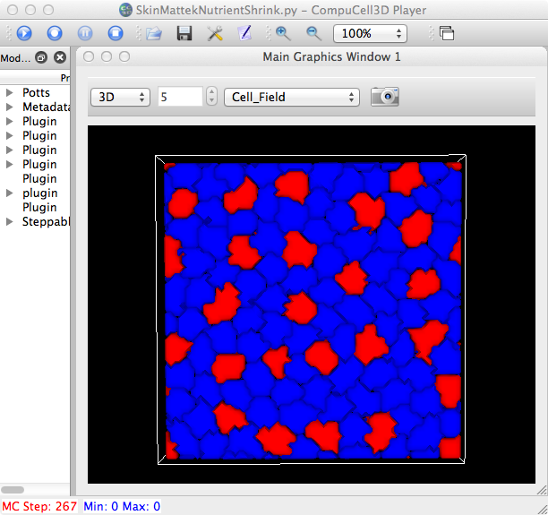
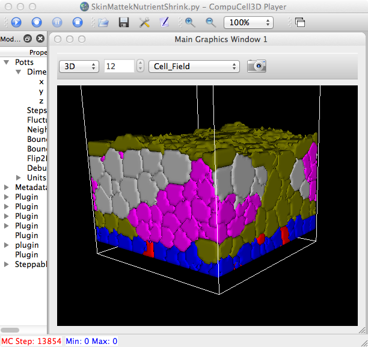
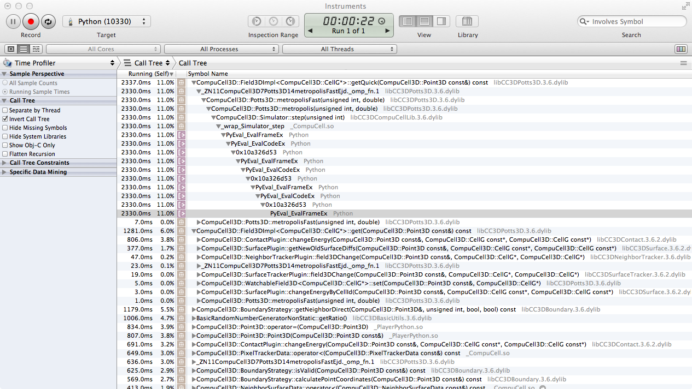

Hiding celltype 1 (Frozen) in 3D view.


From the top (or bottom? - whatever grows first).
...
Step 7012 Flips 133637/9187500 Energy -34947.7 Cells 229 Inventory=229
cell numbers 163.56851312 0 1 20 72 81 55 0
cell max heights [0, 2.0, 9.295580110497237, 9.8, 31.92288961038961, 30.586993243243242, 0]
percent TA cells 21.7391304348
FAST numberOfAttempts=9187500
Have checked 84 cells
set of NeighborSurfaceData do not match for cell: 0x7fb4b7b16460
cell->id=84 cell->type=4
-->
~/git/CompuCell3D/CompuCell3D/core$ grep "do not match" */*/*/*.cpp
...
CompuCell3D/plugins/NeighborTracker/NeighborTrackerPlugin.cpp: cerr<<"set of NeighborSurfaceData do not match for cell: "<<cell<<endl;
What about running with a single thread:
SkinMattekNutrientShrink.py:# metadata.ElementCC3D("VirtualProcessingUnits",{"ThreadsPerVPU":2},4)
SkinMattekNutrientShrink.py: metadata.ElementCC3D("VirtualProcessingUnits",{"ThreadsPerVPU":1},1)
OK, I've spent too much time on your "bug" of not being to use runScript. The basic problem stems from the voodoo you're trying
to do in this function in MattekMasterSteppableNutrientShrink.py:
def writeFileToScreenshotOutputDirectory(CompuCellSetup, files_to_write=[]):
screenshotDirectoryName = CompuCellSetup.getScreenshotDirectoryName()
if screenshotDirectoryName is not "":
print("screenshotDirectoryName", screenshotDirectoryName)
screenshot_directory_parts = screenshotDirectoryName.split("/")
parent = "/".join(screenshot_directory_parts[:-1])
caller_file_name = inspect.stack()[1][1]
caller_file_name = os.path.abspath(caller_file_name)
print("caller file name", caller_file_name)
shutil.copy2(caller_file_name, screenshotDirectoryName)
shutil.copy2(CompuCellSetup.simulationPythonScriptName, screenshotDirectoryName)
for file_name in files_to_write:
shutil.copy2(parent + "/" + file_name, screenshotDirectoryName)
--------------------------
What's happening is that this copies/creates a *file*, not a *directory* called, e.g.:
~/CC3DWorkspace$ ll|grep skin
-rw-r--r-- 1 heiland staff 18041 Oct 3 10:48 SkinMattekNutrientShrink_py_10_03_2012_11_14_35
and then, later, in cc3d, when we try to create the /LatticeData subdir at this dir, it realizes that it's not a
dir after all, but a file and croaks with an error:
"…./pythonSetupScripts/CMLFieldHandler.py", line 132, in prepareSimulationStorageDir
makedirs(_dirName)
----------------------
Here's a tweaked function of the one above to at least show you that a file is being created instead of a dir and
I'll leave it to you to figure out a proper fix:
def writeFileToScreenshotOutputDirectory(CompuCellSetup, files_to_write=[]):
screenshotDirectoryName = CompuCellSetup.getScreenshotDirectoryName()
if screenshotDirectoryName is not "":
print("screenshotDirectoryName", screenshotDirectoryName)
screenshot_directory_parts = screenshotDirectoryName.split("/")
parent = "/".join(screenshot_directory_parts[:-1])
caller_file_name = inspect.stack()[1][1]
caller_file_name = os.path.abspath(caller_file_name)
print("caller file name", caller_file_name)
print ("MattekMasterSteppableNutrientShrink.py: writeFileToScreenshotOutputDirectory(): caller_file name=", caller_file_name)
print ("MattekMasterSteppableNutrientShrink.py: writeFileToScreenshotOutputDirectory(): screenshotDirectoryName=",screenshotDirectoryName )
if not os.path.isdir(screenshotDirectoryName):
print ("MattekMasterSteppableNutrientShrink.py: writeFileToScreenshotOutputDirectory(): screenshotDirectoryName is NOT a dir!!!!!!!!!!!!")
# os.makedirs(dest_path) # might try to use this to make it a dir
shutil.copy2(caller_file_name, screenshotDirectoryName)
shutil.copy2(CompuCellSetup.simulationPythonScriptName, screenshotDirectoryName)
for file_name in files_to_write:
file2copy = parent + "/" + file_name
print ("MattekMasterSteppableNutrientShrink.py: writeFileToScreenshotOutputDirectory(): file2copy=",file2copy)
shutil.copy2(file2copy, screenshotDirectoryName)
-Randy
On Oct 2, 2012, at 6:35 PM, Ariel Balter wrote:
Ok. Thanks.
On 10/02/2012 03:34 PM, Randy Heiland wrote:
No, when I tried a couple of options, it didn't work for me either. Will try to tackle it again tomorrow probably.
On Oct 2, 2012, at 6:33 PM, Ariel Balter wrote:
Ok. But if I want to run on a cluster, I still need to use the no gui option. I just tried putting my simulation files
directly in the install directory. Still no luck.
Does it work for you?
On 10/02/2012 03:31 PM, Randy Heiland wrote:
No. Bad assumption. Just set your screen image update very high.
On Oct 2, 2012, at 6:26 PM, Ariel Balter wrote:
Any progress on the run script (no gui) thing? I'm assuming that it would be much faster without the gui.
Thanks, Ari
On 10/02/2012 12:25 PM, Randy Heiland wrote:
My run just stopped around mcs 6000 with the following "do not match" msg - mean anything to anyone?
...
cell max heights [0, 2.0, 9.35483870967742, 9.926395939086294, 33.25136186770428, 29.833333333333332, 0]
percent TA cells 25.5319148936
FAST numberOfAttempts=9187500
Number of Attempted Energy Calculations=475091
Step 5940 Flips 133182/9187500 Energy -32505.9 Cells 226 Inventory=226
cell numbers 138.565597668 0 1 24 70 98 33 0
cell max heights [0, 2.0, 9.507894736842106, 10.090225563909774, 33.30733229329173, 29.69217391304348, 0]
percent TA cells 25.5319148936
FAST numberOfAttempts=9187500
Have checked 90 cells
set of NeighborSurfaceData do not match for cell: 0x7ff43798f020
cell->id=90 cell->type=5
On Oct 2, 2012, at 1:07 PM, Ariel Balter wrote:
Incidentally, does suppressing VTK output speed things up?
On 10/02/2012 10:04 AM, Randy Heiland wrote:
Ah, if I change to a different 2D slice (e.g. xy 6), I'll see some cells.
On Oct 2, 2012, at 12:45 PM, Randy Heiland wrote:
Should I see anything drawn in the Cell_Field? I'm not (see attached image). I've also displayed the Activity Monitor,
showing that it's using basically all 8 threads (this is on my Mac, but I've also got it running on Ubuntu).
<mcs881.png>
On Oct 2, 2012, at 12:01 PM, Ariel Balter wrote:
Those are diagnostics (raw_input())
Hit enter. You will need to do it 4 times.
On 10/2/2012 8:24 AM, Randy Heiland wrote:
How should this be run and what should I see as output? When I open/run: SkinMattekNutrientShrink.py
I get as output:
...
99 TA 63 69 56 62 5 11
100 TA 63 69 63 69 5 11
('cumulative z', 12)
('x_dim', 70, 'y_dim', 70, 'z_dim', 125)
70 70 125
('number of mcs', 17493.0)
But nothing seems to appear in the player. Single stepping more than once or twice seems to have it hang forever - or is
this an incredibly lengthy computation?
On Oct 2, 2012, at 11:06 AM, Ariel Balter wrote:
I think it is very likely to have something to do with my machine and/or install. But here are the files. It generally
crashes 1-2 hours in.
On 10/02/2012 07:15 AM, Randy Heiland wrote:
What input file? I'll try to reproduce it.
-Randy
On Oct 1, 2012, at 4:46 PM, Ariel Balter wrote:
Hi folks. I'm running cc3d on two different machines. On the machine I've been using it runs fine. On the new machine
it is crashing after a while. Here is the error. Does this mean anything to you? It was installed on a 64 bit machine using
the .deb.
I'm using periodic BC. Would that matter?
Thanks, Ariel
FAST numberOfAttempts=10412500
Have checked 49 cells
set of NeighborSurfaceData do not match for cell: 0x7facac39b7b0
cell->id=49 cell->type=5
<SkinMattekNutrientShrink.py><MattekMasterSteppableNutrientShrink.py><makeMattekSkinTwoLayers3DPercent.py>

